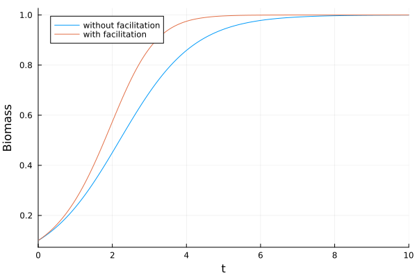
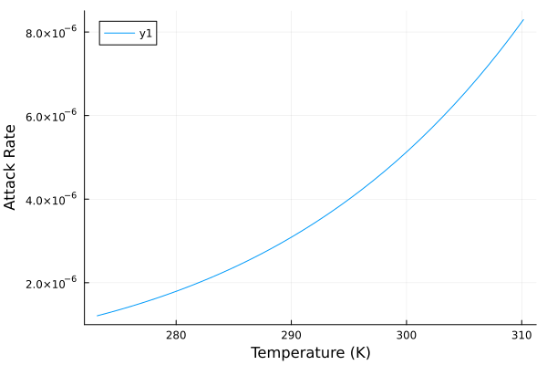

Build Advanced Models
In the previous section, we showed how to create relatively simple models. Here, we explain how to build more sophisticated models by modifying or adding the following features:
- Functional Responses
- Non-Trophic Interactions
- Temperature Scaling
- Explicit Nutrient Dynamics
- Competition Between Producers
Functional Responses
By default, the functional response is classic as in Yodzis and Innes, 1992, that is parameterized by the attack rate and the handling time. We write below the corresponding dynamical system:
\[\frac{dB_i}{dt} = g(B_i) + B_i \sum_{j \in \{ \text{res.} \}} e_{ij} F_{ij} - \sum_{j \in \{ \text{cons.} \}} B_j F_{ji} - x_i B_i\]
\[F_{ij} = \frac{1}{m_i} \cdot \frac{\omega_{ij} a_{ij} B_j^h}{1 + c_i B_i + h_t \sum_{k \in \{ \text{res.} \}} \omega_{ik} a_{ik} B_k^h}\]
with:
- $\omega_{ij}$ preference of consumer $i$ on resource $j$
- $c_i$ the intensity of intraspecific predator interference in consumer $i$
- $h$ the hill-exponent
- $a_{ij}$ the attack rate of consumer $i$ on resource $j$
- $h_t$ the handling time
- $m_i$ the body mass of consumer $i$
The parameters of the functional response can be customized. For example, the default hill exponent is 2 (type III functional response).
using EcologicalNetworksDynamics
fw = Foodweb([2 => 1])
m = default_model(fw)
m.hill_exponent2.0But we can change its value, for instance to 1:
m.hill_exponent = 1 # Same as set_hill_exponent!(m, 1).
m.hill_exponent # Check that the value has changed.1.0Above, we changed the value after the model was created. But this value can also be set when the model is created:
m = default_model(fw, ClassicResponse(; h = 1))
m.hill_exponent1.0Moreover, the dynamical system is often parameterized differently, with the bioenergetic functional response as in Williams, Brose and Martinez, that is parameterized with half-saturation density. In this case, the dynamical system reads:
\[\frac{dB_i}{dt} = g(B_i) + B_i \sum_{j \in \{ \text{res.} \}} e_{ij} F_{ij} - \sum_{j \in \{ \text{cons.} \}} B_j F_{ji} - x_i B_i\]
\[F_{ij} = \frac{\omega_{ij} B_j^h}{B_0^h + c_i B_i B_0^h + \sum_{k \in \{ \text{res.} \}} \omega_{ik} B_k^h}\]
with:
- $\omega_{ij}$ preference of consumer
ion resourcej - $B_0$ the half-saturation density
- $c_i$ the intensity of intraspecific predator interference
- $h$ the hill-exponent
To change for the bioenergetic functional response, you can do:
m = default_model(fw, BioenergeticResponse())
m.half_saturation_density[2] # Consumer half-saturation density.0.5You can also tune the bioenergetic functional response. For instance, you can change the half-saturation density:
m = default_model(fw, BioenergeticResponse(; half_saturation_density = 0.1))
m.half_saturation_density[2] # Check that the value is the one we set.0.1Non-Trophic Interactions
Food webs, and therefore trophic interactions, are at the core of the package. However, the importance of other interactions (hereafter non-trophic interactions) is increasingly recognized. For this reason, we offer the possibility to include non-trophic interactions in food web models. Four non-trophic interactions can be considered as in Miele et al., (2019):
- Competition for space between producers
- Plant facilitation (e.g. because of nitrogen fixation or seed dispersal)
- Interference between predators sharing a prey
- Refuge provisioning for prey
For example, let's compare the dynamics of a plant growing toward its carrying capacity with and without facilitation. In this simplistic setting, we do not consider trophic interactions, but only the focal plant (1)
using Plots
fw = Foodweb(zeros(Int, 2, 2))
m_no_facilitation = default_model(fw)
B0, t = [0.1], 10
sol_no_facilitation = simulate(m_no_facilitation, B0, t)
A = [0 0; 1 0]
m_facilitation = default_model(fw, FacilitationLayer(; A))
sol_no_facilitation = simulate(m_no_facilitation, B0, t)
sol_facilitation = simulate(m_facilitation, [0.1], t)
plot(
sol_no_facilitation;
xlabel = "Time",
ylabel = "Biomass",
idxs = [1],
label = "without facilitation",
)
plot!(sol_facilitation; idxs = [1], label = "with facilitation")
savefig("facilitation.svg");
We observe that the plant grows faster with facilitation, as we intuitively expect.
Temperature Scaling
The metabolic theory of ecology (MTE) describes how species biological rates scale with temperature. We allow scaling the metabolic rates of species with temperature, following the MTE, as in Binzer et al. (2016). To do so, we simply have to pass the temperature to the model.
m = default_model(fw, Temperature(290)) # Note that the temperature is in Kelvin.Model (alias for EcologicalNetworksDynamics.Framework.System{<inner parms>}) with 18 components:
- Species: 2 (:s1, :s2)
- Foodweb: 0 link
- Temperature: 290.0K
- Body masses: [1.0, 1.0]
- Metabolic classes: [:producer, :producer]
- GrowthRate: [1.0799310794944612e-7, 1.0799310794944612e-7]
- Carrying capacity: [4.071090742409496, 4.071090742409496]
- ProducersCompetition: 1.0
- LogisticGrowth
- Efficiency: ·
- Hill exponent: 2.0
- Consumers preferences: ·
- Intra-specific interference: [·, ·]
- Handling time: ·
- Attack rates: ·
- ClassicResponse
- Metabolism: [0.0, 0.0]
- Mortality: [0.0, 0.0]For example, we can plot the attack rate as a function of temperature:
fw = Foodweb([2 => 1])
attack_rate = []
T_values = 273.15:1:310.15
for T in T_values
local m = default_model(fw, Temperature(T))
push!(attack_rate, m.attack_rate[2])
end
plot(T_values, attack_rate; xlabel = "Temperature (K)", ylabel = "Attack Rate")
savefig("temperature-attack-rate.svg");
Explicit Nutrient Dynamics
Producer growth dynamics is by default modelled by a logistic growth. But, we can also model explicit nutrient dynamics given by:
\[\frac{\mathrm{d} N_l}{\mathrm{d} t} = D_l(S_l - N_l)-\sum^n_{i=1}{c_{li}G_i(N)B_i}\]
Where:
- $N_l$ is the concentration of nutrient
l - $D_l$ is the turnover rate of nutrient
l - $S_l$ is the supply rate of nutrient
l - $c_{li}$ is the nutrient concentration of producer
iin nutrientl - $r_i$ is the intrinsic growth rate of producer
i
Moreover, the producer growth G_i is given by:
\[G_{i}(N) = \min(\frac{N_1}{K_{1i}+N_1}, \dots, \frac{N_l}{K_{li}+N_l}) B_i\]
Where K_{li} is the half-saturation constant of producer i for nutrient l. For more details, see for instance Brose (2008).
To implement nutrient dynamics, we have to pass the corresponding component to the model.
m = default_model(fw, NutrientIntake(1))
m.n_nutrients # Number of nutrients.1We can of course change the number of nutrients:
m = default_model(fw, NutrientIntake(3))
m.n_nutrients # Number of nutrients.3We can also change the parameters of the nutrient dynamics, as the supply rate, the concentration, and the nutrient turnover rate:
m = default_model(fw, NutrientIntake(3; supply = 10.2))
m.nutrients_supply # Supply rate of nutrients.3-element EcologicalNetworksDynamics.Nutrients.SupplyRates:
10.2
10.2
10.2m = default_model(fw, NutrientIntake(3; turnover = 0.2))
m.nutrients_turnover # Turnover rate of nutrients.3-element EcologicalNetworksDynamics.Nutrients.TurnoverRates:
0.2
0.2
0.2m = default_model(fw, NutrientIntake(3; concentration = 0.9))
m.nutrients_concentration # Concentration of nutrients.1×3 EcologicalNetworksDynamics.Nutrients.Concentrations:
0.9 0.9 0.9Nutrient concentration is a matrix, where rows correspond to producers and columns to nutrients.
Competition Between Producers
By default, producers follow logistic growth.
\[G_i = 1 - \frac{B_i}{K_i}\]
Where $K\_i$ is the carrying capacity of the producer i, and B_i is its biomass. But this formulation can be generalized to the case of competition between producers, thereby reading:
\[G_i = 1 - \frac{\sum_{j=1}^{S} a_{ij} B_j}{K_i}\]
Where a_{ij} is the competition coefficient between producer i and j. Producer competition can be implemented by modifying the producer growth component of the model.
foodweb = Foodweb(zeros(Int, 2, 2)) # 2 producers.
g_no_competition = LogisticGrowth(; producers_competition = [1 0; 0 1]) # Default.blueprint for LogisticGrowth:
r: blueprint for GrowthRate:
allometry: (
producer (:p, :prod) => (
prefactor (:a) => 1.0
source_exponent (:b) => -0.25
)
invertebrate (:i, :inv) => ()
ectotherm (:e, :ect) => ()
)
K: blueprint for CarryingCapacity:
K: 1.0
producers_competition: blueprint for ProducersCompetition:
alpha: 2×2 SparseArrays.SparseMatrixCSC{Float64, Int64} with 2 stored entries:
1.0 ⋅
⋅ 1.0g_competition = LogisticGrowth(; producers_competition = [1 0.1; 0.9 1])blueprint for LogisticGrowth:
r: blueprint for GrowthRate:
allometry: (
producer (:p, :prod) => (
prefactor (:a) => 1.0
source_exponent (:b) => -0.25
)
invertebrate (:i, :inv) => ()
ectotherm (:e, :ect) => ()
)
K: blueprint for CarryingCapacity:
K: 1.0
producers_competition: blueprint for ProducersCompetition:
alpha: 2×2 SparseArrays.SparseMatrixCSC{Float64, Int64} with 4 stored entries:
1.0 0.1
0.9 1.0